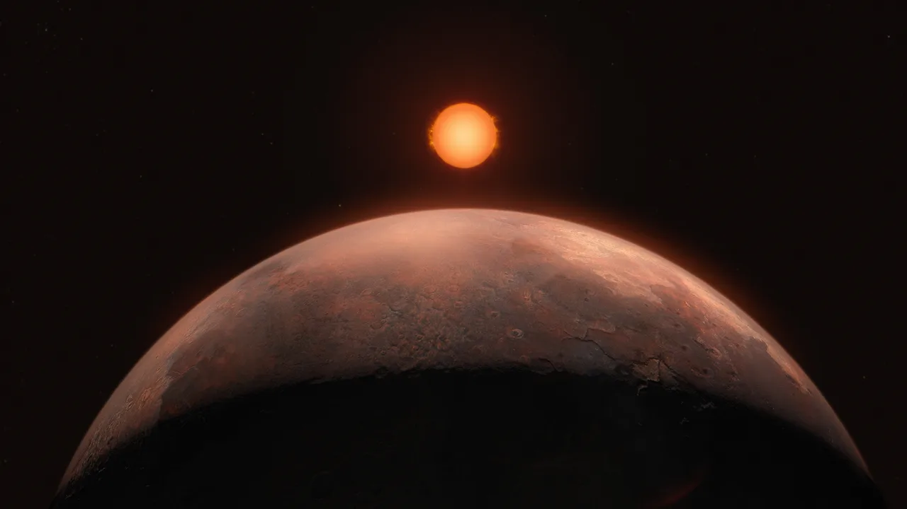

1. Oktober 2024
Vier kleine Planeten um Barnards Stern
Barnards Stern ist ein roter Zwerg in nur sechs Lichtjahren Entfernung. Nach dem Alpha-Centauri-System ist er der, der Sonne nächstgelegene Stern. Im Oktober 2024 wies ein Team mit dem Spektrographen ESPRESSO des Very Large Telescope hier einen Planeten nach, der deutlich leichter als die Erde ist und sein Zentralgestirn in nur 3,15 Tagen umkreist.
Wenig später, im März 2025, bestätigten Messungen mit dem Spektrographen MAROON-X am Gemini-North-Teleskop diesen Planeten und fanden darüber hinaus drei weitere. Alle vier Planeten wurden mit der Radialgeschwindigkeitsmethode entdeckt. Sie haben nur etwa 20 bis 30 Prozent der Erdmasse und umkreisen ihren Stern so eng, dass sie für Leben ungeeignet sind.
Quellen: ESO: "Scientists discover planet orbiting closest single star to our Sun." Online; eso.org; 01.10.2024; Basant, R. et al.: "Four Sub-Earth Planets Orbiting Barnard's Star from MAROON-X and ESPRESSO."; The Astrophysical Journal Letters 982, L1 (2025); https://doi.org/10.3847/2041-8213/adb8d5